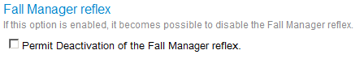
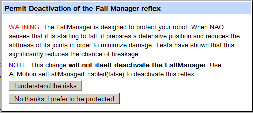

NAOqi Motion - Overview | API
Because NAO may fall, we taught him to stand up. But we went even further by establishing a system to detect falls: it protects with her arms before touching the ground. NAO can therefore fall, he will not hurt.
By default, the fall manager is active on NAO.
The basic idea is to look at both the support polygon and the Center Of Mass (COM) of NAO. If the COM is detected out of the support polygon, the fall manager process is activated.
This process has priority over all other motion tasks. The chosen strategy is composed by an arms and pelvis joint configuration to protect the robot follow by a stiffness off command to cushion the fall. The joint configuration depends on the fall angle (back, front, right or left).
A memory event called robotHasFallen() is raised when the fall management process is completed.
The fall manager reflex is only activated when at least one foot touch the ground (based on ALFsr).
If the robot is lift, sit or other posture than stand, the fall manager is not activated.
As this reflex increase a lot the life time before failure of NAO, we recommend to not disable this reflex.
But as we know that in some situation, this reflex will disturb your work, please follow these two steps to disable it.
Allow deactivation
The first step is to allow deactivation of this reflex.
With the web page
You can do it throw the NAO web page settings (NAO Web page).
if you check the box, a pop-up asks for your confirmation.
By clicking on the button: “I understand the risks”, you allow the deactivation of the Fall manager.
Programmatically
The right of deactivation of the fall manager is managed by the ALMotion preference into the robot. (/home/nao/.config/naoqi/ALMotion.xml).
So, you can edit by hand this file or use the ALPreferences API.
The name of the preferences in ALMotion.xml is: “ENABLE_DEACTIVATION_OF_FALL_MANAGER”.
And the preference file should have this form:
<Preference name="ENABLE_DEACTIVATION_OF_FALL_MANAGER" description="If true the
deactivation of Fall Manager is allowed" value="true" type="bool" />
Disable the reflex
Once, the deactivation of the fall manager is allowed, it’s possible to use the ALMotionProxy::setFallManagerEnabled() method to disable the fall manager for the current naoqi launch.
Before this, you should have prepared your own defensive methods to protect from falls.
motionProxy.setFallManagerEnabled(False)
You can also use the ALMotion preference key “ENABLE_FALL_MANAGER_PROTECTION” with a value=”false” for disable at every naoqi launch the fall manager reflex.
And the preference file should have this form:
<Preference name="ENABLE_FALL_MANAGER_PROTECTION" description="If false the Fall Manager
reflex is disable on this robot." value="false" type="bool" />